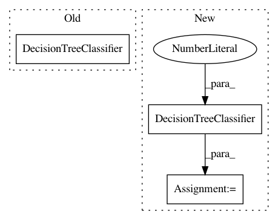

906992a725d448fedf8d448e675e23cb4c76b6e1,tests/test_runs/test_run.py,TestRun,test_to_from_filesystem_search,#TestRun#,116
Before Change
run_prime.publish()
def test_to_from_filesystem_search(self):
model = GridSearchCV(estimator=DecisionTreeClassifier(), param_grid={"max_depth": [1, 2, 3, 4, 5]})
task = openml.tasks.get_task(119)
run = openml.runs.run_model_on_task(task, model, add_local_measures=False)
After Change
run_prime.publish()
def test_to_from_filesystem_search(self):
model = Pipeline([
("imputer", Imputer(strategy="mean")),
("classifier", DecisionTreeClassifier(max_depth=1)),
])
model = GridSearchCV(
estimator=model,
param_grid={
"classifier__max_depth": [1, 2, 3, 4, 5],
In pattern: SUPERPATTERN
Frequency: 3
Non-data size: 3
Instances
Project Name: openml/openml-python
Commit Name: 906992a725d448fedf8d448e675e23cb4c76b6e1
Time: 2018-06-21
Author: feurerm@informatik.uni-freiburg.de
File Name: tests/test_runs/test_run.py
Class Name: TestRun
Method Name: test_to_from_filesystem_search
Project Name: DistrictDataLabs/yellowbrick
Commit Name: 870022ab7abce46f9bff47c8a9c787808a630e59
Time: 2019-01-30
Author: benjamin@bengfort.com
File Name: tests/test_classifier/test_confusion_matrix.py
Class Name: ConfusionMatrixTests
Method Name: test_quick_method
Project Name: DistrictDataLabs/yellowbrick
Commit Name: b3256666df69e645159c8ef91fb3e4bfd826b8de
Time: 2018-06-05
Author: lwgray@gmail.com
File Name: tests/test_classifier/test_classification_report.py
Class Name: ClassificationReportTests
Method Name: test_quick_method